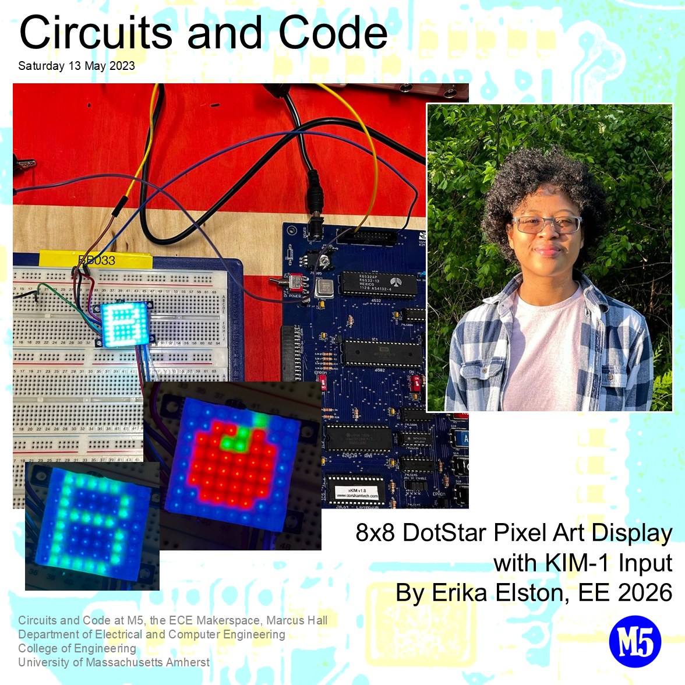

KIM-1 LED Matrix Art
I completed this project as the final task in ECE 197DP—a weekly 3-hour lab/elective centered around the KIM-1 single-board computer. The course aimed to provide a hands-on introduction to fundamental circuit theory and 6502 assembly language. Throughout the semester, we got comfortable reading datasheets and working with various LEDs, integrated circuits, and other electronic components. We presented our individual projects at the 2023 M5 Circuits & Code showcase.
Components
- KIM-1 Clone (Corsham Technologies)
- DotStar 8x8 LED Grid (Adafruit)
- Breadboard
- 6502 assembly language to hex compiler (asm80.com)

After settling on the Adafruit 8x8 LED grid as the main project component, I drafted six tentative designs to map to keys A through F on the KIM-1's keyboard. I wanted to create something that could serve as a desk accessory, similar to Divoom's pixel art speakers.

I tested various color combinations on the DotStar with the first 1-2 rows of each pattern, reworking the RGB and brightness values as needed. To cut down on testing time, I wrote a short Python script that took a text file with colors written in plain text and produced the appropriate assembly language instructions for each LED, allowing me to test and adjust different RGB values quickly. This saved a substantial amount of time, as the information for a single pixel involves 4 separate hex values and I was frequently adjusting the values for all 16 (and eventually 64) pixels at a time.
When I moved on to testing the 8x8 patterns in full, only about half of my patterns were showing up on the DotStar, with the rest of the grid remaining off. I eventually realized that the initial memory location I was loading the LED instructions to didn't have enough space for all 256 bytes of information. Luckily, the KIM-1 clone by Corsham actually included additional RAM ("RAM from 2000 to FFF7. The KIM-1 had nothing past 1FFF") and I was able to easily adjust the start address to avoid any additional memory-related issues.
Some additional details are included in the slides below. While not very complicated, this project and the course introduced me to many fundamental skills that I've found useful in other classes since. I appreciated being given room for creativity and problem solving, while being encouraged to ask questions and learn from my mistakes. This course inspired me to propose the creation of an additional experiential learning course focused on providing students with the opportunity to work on a semester long project with regular instructor guidance, as a stepping stone between 197DP and the junior & senior design projects.